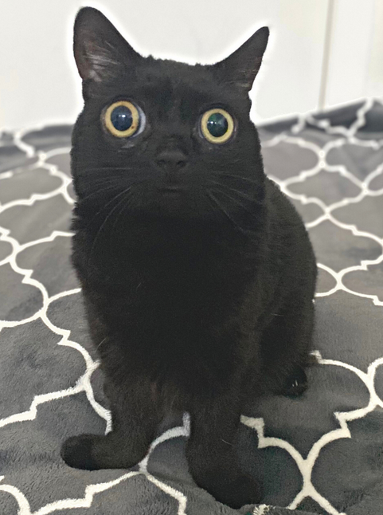

|  |
| Nacimiento: 15 de Septiembre de 2018 Raza: Pelo Corto Americana Pasatiempo favorito: Dormir |
Jinx (Nacimiento 15 de Septiembre de 2018) es una gata Pelo Corto Americana. Jinx Es conocida por sus pupilas de gran tamaño y sus patas delanteras que se exitenden hacia afuera. Jinx gano popularidad cuando su dueña Mia empezo a publicar fotos y videos de Jinx en Instagram.
En Octubre de 2018, Jinx tenia 2 semanas de vida y fue cuando Mia la encontro en su patio trasero. Mia se dió cuenta de que Jinx habia sido abandonada y que necesitaba de un hogar. Unos dias pasaron y Mia se dio cuenta de que Jinx no parecia ser un gato normal. Mia llevo a Jinx al veterinario el cual confirmo que Jinx sufria de algunos defectos pero que su salud no peligraba.